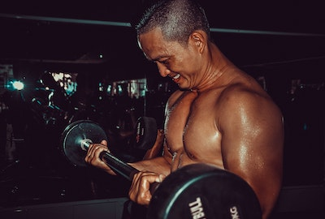
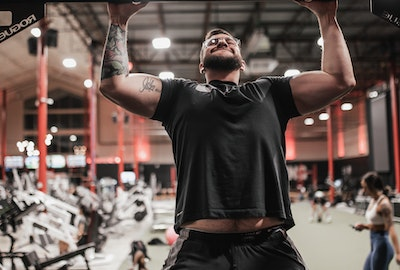
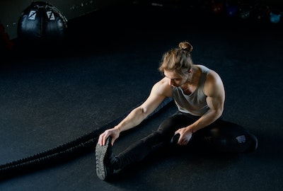
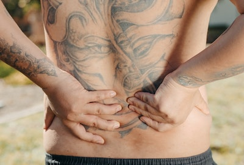
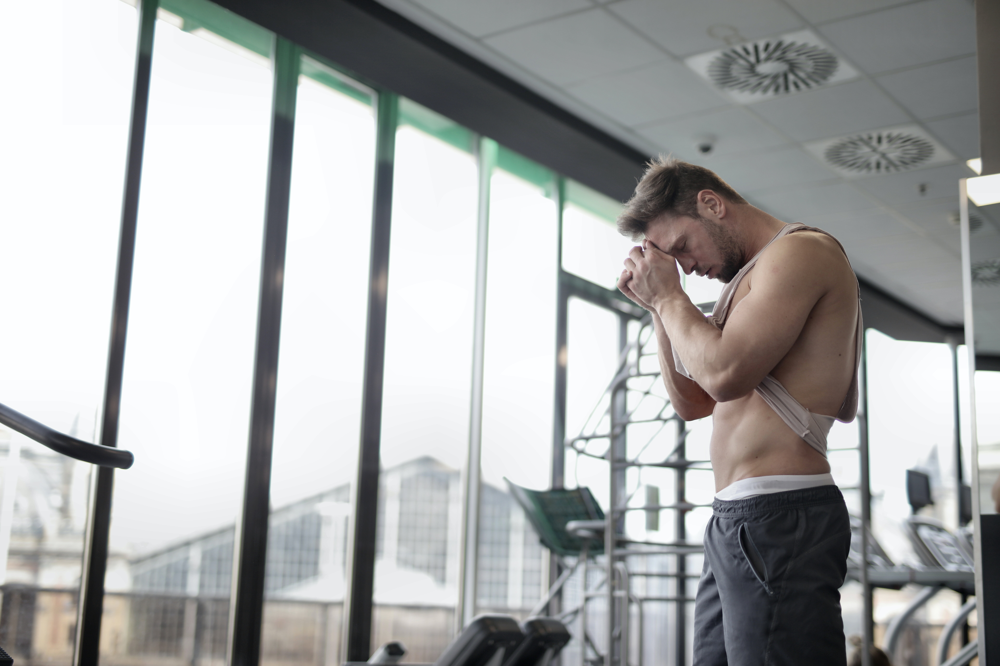
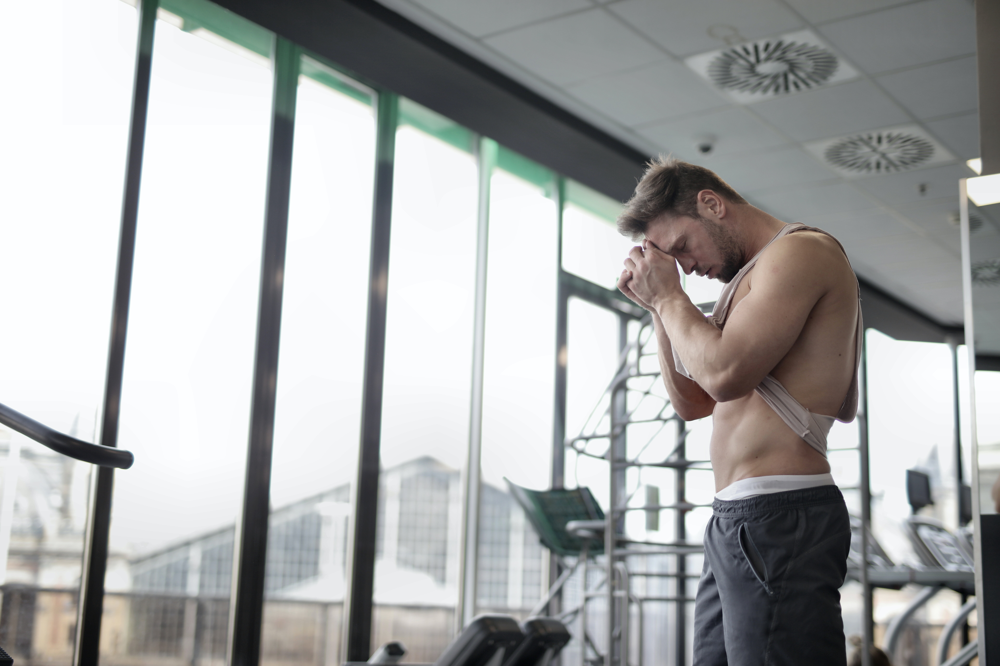

RESUELVE TUS DUDAS
AQUI PODRAS INFORMARTE Y APRENDER
¿LLEGAR AL FALLO ES BUENO?
 Llegar al fallo te puede beneficiar, pero también te puede perjudicar. Tenemos que saber como utilizar el fallo a nuestro beneficio. Si todos los días del entreno llegamos al fallo, perjudicará nuestra recuperación para el próximo entreno y no podremos cargar el mismo peso e incluso estarás muy adolorido.
El fallo se tiene que llegar muy debes en cuando, por ejemplo si solo entrene 3 veces a la semana y tendré muchos días de recuperación, entonces si nos convendrá llegar al fallo. Ya que hasta el próximo entrenamiento estaremos recuperados.
En resumen, si tienes muchos días de descanso puedes permitirte llegar al fallo. De lo contrario tenemos que tener cuidado y entrenar con cabeza.
¿TENER AGUJETAS ES BUENO O MALO?
 Hay que entender que tener agujetas no quiere decir que vayas a crecer más. Simplemente, indica que tu cuerpo recibió un estímulo muy elevado al punto que se produjeron traumas microscópicos en el músculo.
La parte buena de las agujetas es que tu músculo al recuperarse podrá aguantar mejor el entrenamiento y posiblemente te hayas hecho más fuerte.
El punto malo es que si llegas a tener agujetas y sigues entrenando sin descanso se podría producir posibles lesiones en las articulaciones o tendones, ya que en ese punto siguen débiles.
Un consejo si tienes agujetas puedes seguir entrenando, pero bájale el peso si ves que no puedes seguir. Importante dejar descansa cada grupo muscular 48H.
¿MAS DIAS DE ENTRENO ES IGUAL A MEJORES RESULTADOS?
 

Depende si eres capaz de organizar tu rutina de entrenamiento para que los músculos puedan descansar mínimo 48H sí. De lo contrario, excederse sería muy peligroso porque al llevar muchos días sin parar el músculo se vuelve vulnerable y tiene muchas posibilidades de desgarre.
Para la recuperación de los músculos es importante tener una alimentación equilibrada como por ejemplo carne roja, Huevos, Atún, Leche, Pechuga de pollo, etc.
Como recomendación con que entrenes 3 o 4 días a la semana ya es suficiente. Si haces más días también está bien siempre y cuando tengas días de descanso.